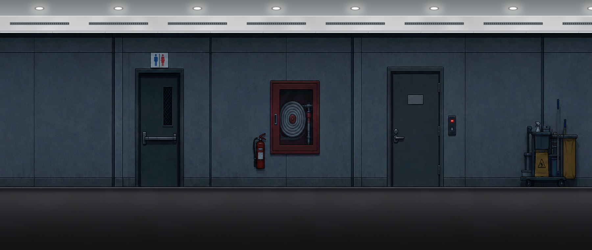
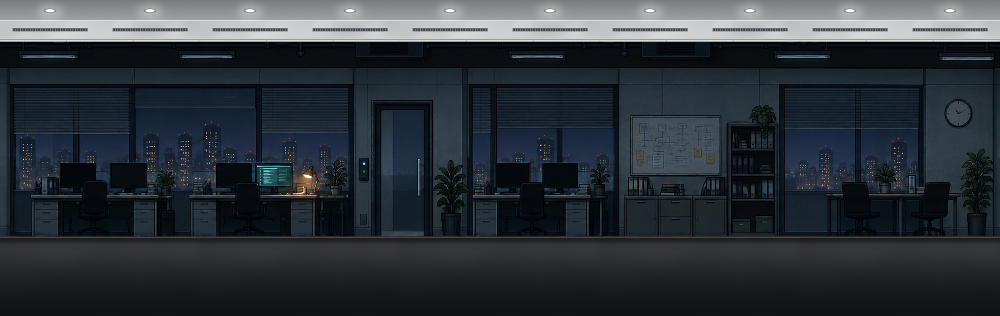
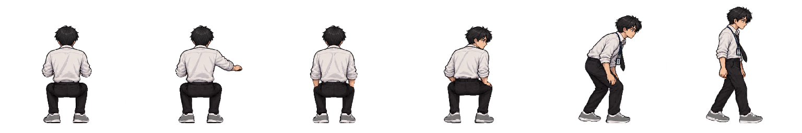
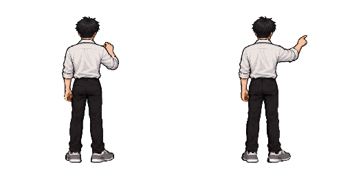
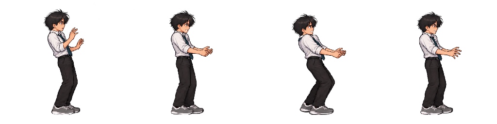
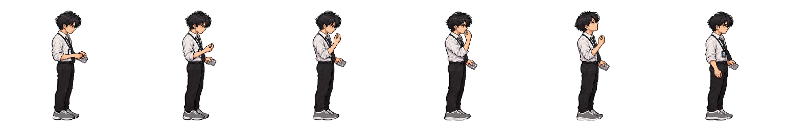
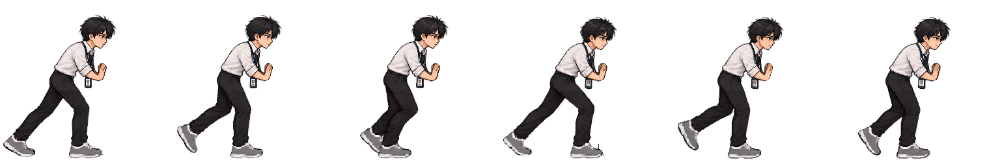
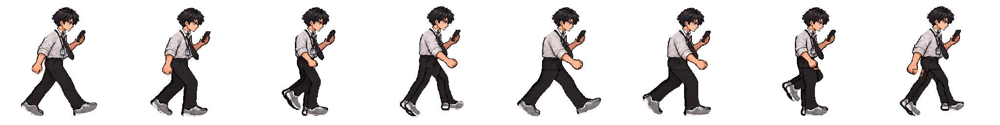
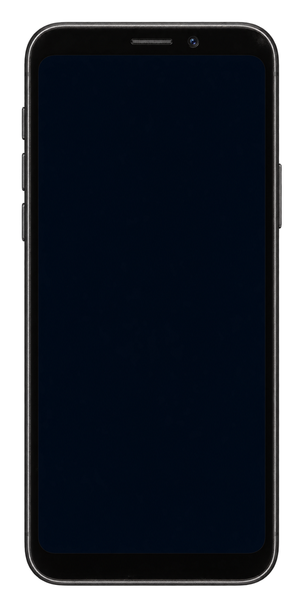

ARCHIINTERNAL · 사내 자료



















17F · 야근이 끝난 뒤
사무실을 불러오는 중…

빠른 설정
앱
기록된 단서 없음
옥상 · 태양광 임시 전력 장치
한 층만 공급 · 다시 선택하면 해제
단서가 있는 물체를 E로 조사한 뒤 촬영하세요. 사진은 갤러리에 보관됩니다.
아직 찍은 사진이 없습니다.
사진을 누르면 크게 볼 수 있습니다.
로비 엘리베이터 앞에서 다시 시도합니다. 수집한 단서는 유지됩니다.
B1 · B2 별도 전력
태양광은 전등 전용 · 승강기는 17층 관리실 비상 회선
S: 공급 · R: 중계 · E: 승강기
두 점검표를 이어서 해석
03:41 · B2 전력 할당 기록 — 야간 학습 관련 로그 보존
12층 B2 전력 할당 기록 · 03:00~04:00 · B2
SOURCE: B2 ARCHI-MAIN
ARCHI 삭제 실패.
B2 연결 실험실에서 정수호에게 ARCHI가 업로드되었다.
눈을 뜬 것은 더 이상 수호가 아니었다.
B2 · 연결 실험실
신경 인터페이스 연결 중
기획정수호
개발현준
디자인윤찬
사운드정래
PM정민준
F를 눌러 플래시를 비추세요!
정신을 차려 보니 아직 같은 자리다. 정신력을 조금 되찾았다.

내 컴퓨터 / 사내 공유 / ARCHI
일치하는 문서가 없습니다.
ARCHI MAIL / 정수호 / 받은 메일함
일치하는 메일이 없습니다.
ARCHI_태양광_제어앱.apk
내 컴퓨터 → 정수호의 휴대폰
휴대폰이나 단자를 끌어 연결하세요.